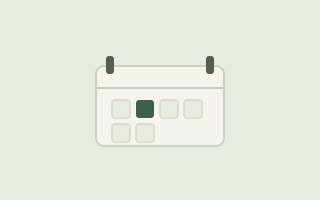

Framework 04
Default Settings
Redesign the defaults around you. This includes calendar blocks, meeting invites, or a standing desk. Make movement the easy option, not the exception you have to fight for.
The problem it solves
Most workday defaults are quietly built for sitting: back-to-back meeting invites, calendars with zero buffer, chairs positioned for eight straight hours. You don't have to out-willpower a system like that, it's easier to change the defaults themselves so the sedentary option stops being the automatic one.
How it works
- Change your default meeting length from 30 or 60 minutes down to 25 or 50: the leftover minutes become a built-in movement buffer, not something you have to protect manually.
- Set a recurring calendar block labeled "not a meeting" during your lowest-energy hour, and treat it like any other appointment.
- Default one recurring one-on-one to a walking call instead of asking each time: make the exception the sitting version, not the walking one.
- Revisit your defaults monthly. Systems drift back to convenience unless someone checks.
Why it works
Habit-formation researchers point to context and environmental cues as some of the strongest levers in behavior change: when the default setup of your day already points toward a behavior, it requires far less active decision-making to follow through. Explored further in this research agenda on habit-based interventions.